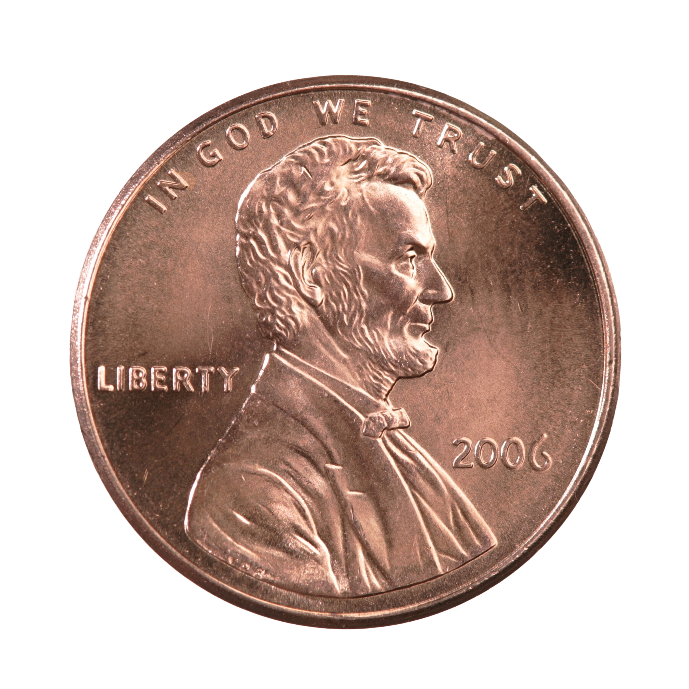

<!DOCTYPE html>
<html lang="en">
<head>
<meta charset="UTF-8">
<meta name="viewport" content="width=device-width, initial-scale=1.0">
<title>Make A Wish</title>
<link rel="stylesheet" href="style.css">
<style>
  /* Page shell */
  html, body {
    margin: 0;
    min-height: 100%;
    height: 100%;
  }

  body {
    position: relative;
    isolation: isolate; 
  }

  /* Translucent static ripple overlay */
  body::before {
    content: "";
    position: fixed;
    inset: -12%;
    background-image: url("assets/images/water-texture.jpeg");
    background-repeat: no-repeat;
    background-position: center;
    background-size: 155%;
    opacity: 0.45;
    pointer-events: none;
    z-index: 1;
  }

  /* Default every direct child of body to sit below the water-texture overlay (z-index 1) */
  body > * {
    position: relative;
    z-index: 0;
  }

  /* Tiled pool-floor background */
  .water-bg {
    position: fixed;
    inset: -5%;
    z-index: -1;
    background-image: url("assets/images/distorted-tile.png");
    background-repeat: no-repeat;
    background-size: cover;
    background-position: center center;
    filter: url("#turbulence");
    pointer-events: none;
  }

  .water-filter-defs {
    position: absolute;
    width: 0;
    height: 0;
  }
</style>
<body>
  <!-- Moving-water background (adapted from github.com/GoldenMaximo/CSS-Realistic-Water): -->
  <div class="water-bg"></div>
  <svg class="water-filter-defs" aria-hidden="true">
    <filter id="turbulence" x="0" y="0" width="100%" height="100%">
      <feTurbulence id="sea-filter" numOctaves="3" seed="2" baseFrequency="0.02 0.05"></feTurbulence>
      <feDisplacementMap scale="20" in="SourceGraphic"></feDisplacementMap>
      <animate href="#sea-filter" attributeName="baseFrequency" dur="60s" keyTimes="0;0.5;1"
               values="0.02 0.06;0.04 0.08;0.02 0.06" repeatCount="indefinite"></animate>
    </filter>
  </svg>

  <!-- Container that all generated pennies get absolutely positioned inside -->
  <div class="penny-field" id="penny-field"></div>

  <!-- Background music and speaker button -->
  <audio id="bg-music" src="assets/music/barque-sur-locean.mp3" loop></audio>
  <button type="button" class="music-toggle hidden" id="music-toggle" aria-label="Pause music" aria-pressed="false">
    <svg viewBox="0 0 18 18" aria-hidden="true">
      <path fill="currentColor" d="M7.003 3.835v10.421c0 .189-.112.36-.285.436a.424.424 0 01-.19.038.526.526 0 01-.321-.123l-2.915-2.719H.932a.93.93 0 01-.928-.928V7.132a.93.93 0 01.928-.928h2.35l2.925-2.72a.483.483 0 01.511-.084.478.478 0 01.285.435zM13.44.828c.07.07 6.876 7.695.047 16.38a.947.947 0 11-1.495-1.167 10.73 10.73 0 00.046-13.936A.95.95 0 0113.44.828zm-2.865 2.818a8.053 8.053 0 012.162 5.4 8.053 8.053 0 01-2.16 5.4.953.953 0 01-1.338.019.947.947 0 01-.028-1.336 6.407 6.407 0 001.62-4.083 6.407 6.407 0 00-1.62-4.083.947.947 0 011.364-1.317z"/>
      <line class="music-slash" x1="1" y1="1" x2="17" y2="17" stroke="currentColor" stroke-width="1.6" stroke-linecap="round"/>
    </svg>
  </button>

  <!-- Fixed input bar at the bottom where the user types a dream -->
  <!-- Starts centered and enlarged ("intro"); moves to the bottom after the first penny -->
  <form class="dream-form intro" id="dream-form">
    <input
      type="text"
      id="dream-input"
      class="dream-input"
      placeholder=""
      autocomplete="off"
      maxlength="60"
    >
  </form>

  <script>
    const form = document.getElementById('dream-form');
    const input = document.getElementById('dream-input');
    const field = document.getElementById('penny-field');

    // Background music: starts when the visitor submits their first dream (see the submit handler)
    const music = document.getElementById('bg-music');
    const musicToggle = document.getElementById('music-toggle');
    let userPausedMusic = false;

    // Keep the icon in sync with whether music is actually playing (slash = paused)
    function updateMusicIcon() {
      musicToggle.classList.toggle('paused', music.paused);
      musicToggle.setAttribute('aria-pressed', String(music.paused));
      musicToggle.setAttribute('aria-label', music.paused ? 'Play music' : 'Pause music');
    }
    music.addEventListener('play', updateMusicIcon);
    music.addEventListener('pause', updateMusicIcon);
    updateMusicIcon();

    musicToggle.addEventListener('click', () => {
      if (music.paused) {
        userPausedMusic = false;
        music.play().catch(() => {});
      } else {
        userPausedMusic = true;
        music.pause();
      }
    });

    // Types a placeholder prompt out one character at a time, replacing any prompt already there
    let typeInterval = null;
    function typePrompt(promptText) {
      clearInterval(typeInterval);
      let typedChars = 0;
      input.placeholder = '';
      typeInterval = setInterval(() => {
        typedChars++;
        input.placeholder = promptText.slice(0, typedChars);
        if (typedChars >= promptText.length) clearInterval(typeInterval);
      }, 80);
    }

    // Prompts cycle in order, moving to the next one after every entry and looping back to the start.
    // Each visit always opens on the first one.
    const PROMPTS = [
      'What are your dreams?',
      'Who do you want to become?',
      'What kind of world do you want to live in?',
      'How can you change the world?',
      'Who do you want to be?',
    ];
    let entriesThisVisit = 0;
    typePrompt(PROMPTS[0]);

    // Tracks where existing pennies were placed, so new ones can avoid overlapping them
    const placedPennies = []; // {x, y} centers, in px relative to penny-field
    // The most recently submitted penny stays surfaced (above the water texture, ripple playing)
    // until the next dream is submitted, at which point it "sinks" back below the water texture.
    // Restored pennies keep whatever random surfaced/sunk state they got on load.
    let latestItem = null;
    const PENNY_FOOTPRINT = 170; // approx visual diameter of a penny + its label, for overlap checks
    const EDGE_MARGIN = 90; // keep pennies from spawning too close to the field edges
    const FORM_CLEARANCE = 90; // keep pennies clear of the fixed dream-form at the bottom

    // Picks a random point inside the field that's at least PENNY_FOOTPRINT away from
    // every already-placed penny, trying up to 200 times before settling for the least-bad spot.
    // If avoidRect ({left, right, top, bottom} in field px) is given, points inside it are skipped.
    function getRandomPennyPosition(avoidRect) {
      const rect = field.getBoundingClientRect();
      const minX = EDGE_MARGIN;
      const maxX = Math.max(minX, rect.width - EDGE_MARGIN);
      const minY = EDGE_MARGIN;
      const maxY = Math.max(minY, rect.height - EDGE_MARGIN - FORM_CLEARANCE);

      let best = null;
      let bestMinDist = -1;

      for (let attempt = 0; attempt < 200; attempt++) {
        const x = minX + Math.random() * (maxX - minX);
        const y = minY + Math.random() * (maxY - minY);

        if (avoidRect && x > avoidRect.left && x < avoidRect.right &&
            y > avoidRect.top && y < avoidRect.bottom) {
          continue;
        }

        let minDist = Infinity;
        for (const p of placedPennies) {
          const d = Math.hypot(p.x - x, p.y - y);
          if (d < minDist) minDist = d;
        }
        if (placedPennies.length === 0 || minDist >= PENNY_FOOTPRINT) {
          return { x, y };
        }
        if (minDist > bestMinDist) {
          bestMinDist = minDist;
          best = { x, y };
        }
      }
      // couldn't find a non-overlapping spot after many tries; use the least-bad option
      return best || { x: minX, y: minY };
    }

    // Saved dreams live in localStorage so they come back when the page is reopened.
    // Only the text is saved; pennies get fresh random spots on every load.
    const STORAGE_KEY = 'make-a-wish-dreams';

    function loadDreams() {
      try {
        const saved = JSON.parse(localStorage.getItem(STORAGE_KEY));
        if (!Array.isArray(saved)) return [];
        // older saves stored {text, fx, fy} objects; keep just the text
        return saved
          .map((d) => (typeof d === 'string' ? d : d && d.text))
          .filter((t) => typeof t === 'string' && t);
      } catch {
        return []; // storage blocked or data corrupted; start fresh
      }
    }

    function saveDreams(dreams) {
      try {
        localStorage.setItem(STORAGE_KEY, JSON.stringify(dreams));
      } catch {
        // storage blocked (e.g. private browsing); the page still works but won't remember
      }
    }

    const dreams = loadDreams(); // dream texts, oldest first

    // Builds a penny and adds it to the field at the given px position.
    // Surfaced pennies sit above the water texture; sunk ones sit below it.
    // Ripples only play on the most recently entered penny (the "rippling" class).
    function addPenny(text, pos, surfaced) {
      // Build a new penny: expanding ripple rings behind, coin image in front, dream text as the label
      const item = document.createElement('div');
      item.className = 'penny-item ' + (surfaced ? 'surfacing' : 'sunk');
      item.innerHTML = `
        <div class="penny-ripple-wrap">
          <div class="penny-ripple" aria-hidden="true">
            <span class="ripple-ring"></span>
            <span class="ripple-ring"></span>
            <span class="ripple-ring"></span>
          </div>
          
        </div>
        <h3 class="penny-header"></h3>
      `;
      item.querySelector('.penny-header').textContent = text;

      // Spin the coin to a random angle
      item.querySelector('.penny-small').style.transform = `rotate(${Math.random() * 60 - 30}deg)`;

      // Place it and remember that spot so future pennies avoid it
      item.style.left = pos.x + 'px';
      item.style.top = pos.y + 'px';
      placedPennies.push(pos);

      field.appendChild(item);
      return item;
    }

    // Restore saved dreams scattered around the centered intro box (kept clear of the box itself),
    // each randomly surfaced or sunk, so the pool looks a little different on every load
    const fieldRect = field.getBoundingClientRect();
    const boxRect = form.getBoundingClientRect();
    const introBoxZone = {
      left: boxRect.left - fieldRect.left - 100,
      right: boxRect.right - fieldRect.left + 100,
      top: boxRect.top - fieldRect.top - 120,
      bottom: boxRect.bottom - fieldRect.top + 120,
    };
    for (const text of dreams) {
      addPenny(text, getRandomPennyPosition(introBoxZone), Math.random() < 0.5);
    }

    form.addEventListener('submit', (e) => {
      e.preventDefault();
      const text = input.value.trim();
      if (!text) return;

      // Place it at a random, non-overlapping spot, surfaced and rippling
      const item = addPenny(text, getRandomPennyPosition(), true);
      item.classList.add('rippling');

      // Sink the previous new penny (stop its ripple, drop below the water texture)
      // now that this one is taking over as the surfaced one
      if (latestItem) {
        latestItem.classList.remove('surfacing', 'rippling');
        latestItem.classList.add('sunk');
      }
      latestItem = item;

      dreams.push(text);
      saveDreams(dreams);
      input.value = '';

      // After the first penny of this visit, move the form from the center down to its resting spot
      form.classList.remove('intro');
      // Start the music and reveal its button once the first dream is in.
      // Pressing Enter counts as a user action, so browsers allow the sound to play.
      musicToggle.classList.remove('hidden');
      if (!userPausedMusic && music.paused) music.play().catch(() => {});

      entriesThisVisit++;
      typePrompt(PROMPTS[entriesThisVisit % PROMPTS.length]);
    });
  </script>
</body>
</html>

